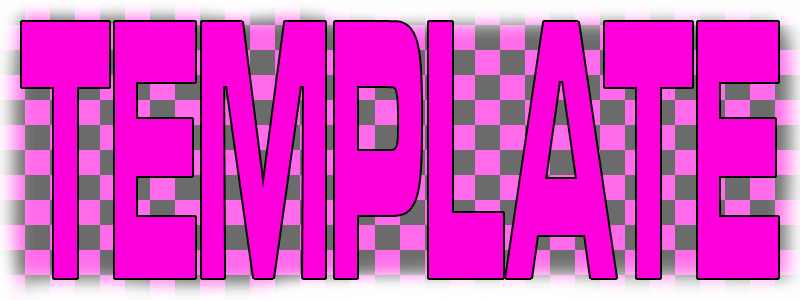

Entry Started: 28th January 2025
Last Edited: 1st April 2025
For a while now, I've had this...fascination with old, long dead online games, it ties in to my love of the "old internet" in general. In the current age of social media algorithms finding new and exciting ways to bruise my soul, it's at the very least comforting to be able to see what people on the internet used to use to make conversation, whether it'll be IRC, web forums and in this case, "massively multiplayer online" games (MMOs).
But as mentioned above, there's been a lesser need for these types of games to exist for the purpose of meeting people online and as such, most drift off into obscruity and obsolescence, forever buried under aging code that's at risk of becoming incompatible with each OS update or worse, the Master Servers themselves being permanently taken offline so that their corporate paymasters can use the resources to fund the payments of their 5th yacht, only a few that have managed to keep up with the rapidly changing online world still remain today, but their best days are long behind them.

Gets even more tragic when I bring up the amount of MMOs that were made for children, set up as dedicated safe spaces for them online, nowadays being either long dead as well or shells of their former selves, leaving children with no real online safe spaces anymore, they have to go to Twitter now, a horrifying reality.
So when the new semester came around and I got the opportunity to share this fascination and how it can be turned into an interesting, narrative driven game with a group of fellow game design students, I was excited.
Within my team of game designers, I have elected to give myself the role of scripting, due to my work for the previous "Extended & Experimental Game Design" module also becuase I believed that being the one that would understand how the game would be made/prototyped, should give me a way to give the game an appropriate scope. But the team didn't just consist of game design students like myself, we were also joined by three animation students so there's also the need to make sure the intended content of the game does not overtake their skill level.
As the majority of our animation members feel as if they have better experience with 2D animation, the decision to try and lean into create a "2.5D" Game as created a full, complete, 2D game in the Unreal Engine is no easy task, but I'm getting ahead of myself.
My idea of a game set in an abandoned or soon to be abandoned online game was only one of many ideas that I and the other game designers on our team had come up with and slammed into a Miro Board with sticky notes.
The idea was to pick a few ideas from the list, find commonalities between them and see how those commonalities would work when compiled together into a single game. The primary inspirations for our ideas came from emotions and the types that we wish for the Player to express during play, metaphors for mental/emotional issues, various robot/AI stories, etc.
The three sticky notes coloured green are the three ideas that we, as a whole team picked out and begun to find pieces in common to form a whole.
With the help of the lecturers, we were able to narrow down what the game will be like, a narrative-driven game where you play as a NPC in an unpopular online game that is expected to shutdown soon, before the shutdown, you find and converse with other NPCs, growing closer with them and finding comfort in the face of the end, while also keeping your end of game up and running.
While the rest of the team continued with idea refinement for the then upcoming presentation, I kept a close eye on how those ideas were being developed as, being a scripter, I had to worry about the actual implementation of our ideas into the Unreal Engine, so I also did some research by watching a few tutorials on YouTube about dialogue systems, working with 2D sprites using a plugin named "PaperZD", etc.
To begin the project in Unreal, I started by following this tutorial series by Michael Pattison which showcases how to make an in-depth dialogue system. Although, I had make some changes to what was done in the tutorial for a few reasons.
The first change was the design of the UI for the dialogue system, making it more of a horizontal design, similiar to that of visual novels. This was done as looking at the UI concepts/"scamps" that other members of the team created, a majority of them have the dialogue box placed at the bottom of the screen with a horizontal design.
The second change, or more appropriate, addition was made to the dialogue system came later, since the system that was featured in the tutorial was suprisingly easy to understand, it was easy to make additions to the code, in this case, adding in an image that can correspond to the actor currently speaking.
This system also works on a per-dialogue basis, meaning that this image can change between pieces of dialogue, allowing for characters to change expressions on the fly without having to start a whole new conversation.
To go further into the features of this dialogue system, there is also the feature of dialogue "branches".
This allows for the system to easily change branches of dialogue between conversations, meaning that all of an actors dialogue can be within one component instead of multiple for each intended branch. To further this example, say an Actor has their default branch be a simple greeting to the Player, the Player then selects an option to continue the default branch's dialogue and when the Player eventually ends the conversation then returns to the Actor, the Actor now has a completely different branch of dialogue.
These branch switches can either be triggered within the dialogue event after the Player selects a dialogue option or via external triggers by casting to the actor's dialogue component.
Speaking of triggers, the dialogue system is also capable of triggering events within the component, to create an example, I had the Actor change their Skeletal Mesh when the Player selects a specific option.
I knew from the presentation (and from what you may have read above) that the game would consist of animated 2D characters so I set about learning a key plugin for the Unreal Engine that would help facilitate that, PaperZD.
PaperZD is a plugin that greatly expands the capabilities of Unreal's existing 2D toolset, for example, allowing for the creation of sprite actors with animation blueprints, similar to regular skeletal meshes, a feature that I would make use of to create dummy/test sprites for now, until the animation team get some proper character sprites done.
The Dialogue system can then be modified to play a specified animation for whenever the characters are talking, which should add some extra life to them when inside the game world.
With that, I decided that it was time to create a video for the other members of the Game Design team documenting how to use the system themselves.
Speaking of animations, I would need to give at least a tentative list of animations that the animation team would have to create for all the characters that will be featured, including some ones unique to the Player Character to make them stand out.
Back to the Miro Board, I and the other members of the Game Design team went to work on a rough game design document, my contributions to it being detailing mechanics such as the dialogue system and character animations.

It was around this same time that we'd made contact with our team member from the Sound Design course, and we decided to conduct a meeting with them, seeing as they're both at completely different campus and they had no idea how much work that us on both the Game Design and Animation side had done yet.
The meeting was conducted over Discord and largely consisted of coming to an agreement/general idea as to what sound effects would be required, what style the sound effects should be (Realistic or Stylized/Cartoony), what materials could be used to generate sound effects (e.g: What surfaces will the Player be expected to walk on?), any music and the intended mood/feeling of said music.
Following this meeting, I and other Game Design members got to work on composing a list of sound effects for the designer to create.
With a sound list done, I decided to go back to the project to implement another mechanic which you've seen on the screenshot of the GDD, the "Party" system.
The Party System was both a pain and somehow also not that hard to implement, mainly because I had seen this tutorial by Josh Clark and figured that I can use parts of it to make a system where the Player can interact with an NPC, ask the NPC to follow them and later telling them to go back to where they were initially.
When you get down to it, a potential party member consists of these components.
With all of that, we now have an NPC that can follow the Player on request, and also return to their original position on request.
What's that? You want to see the code?
Ok, fine...
While this new party system/mechanic works fine, I recognized an issue rather quickly, how would it hand the Player being teleported to another area, or if the go to a new level entirely?
Well, the latter issue can be solved buy just keeping the game on one level, using the World Partition system to load and unload areas as necessary, and the first issue is also solved rather easily.
The "AI MoveTo" node that you can see in the AI Controller's code has an output that fires whenever the AI's pathfinding fails, so we can just use that to teleport the NPC to the Player if they can't path to them, with some offset to prevent any clipping.
Although, don't get too attached to this "Party" System, I'll get to why later.
Around the same time that I solved the AI Teleportation conundrum, our Sound Designer had completed and subsequently provided us with a batch of sound effects, most of which were intended for the User Interface, so I set about implementing a few for now, just to get a feel for how they'll preform in-game.
In the rough Game Design Document that the team had made on Miro, there was mention of the Player needing to buy a new Fishing Rod (The In-Game Explanation being that they're an NPC that mans a fishing minigame), so I thought, how about adding an Inventory system?
Especially if there is ever a need for the Player to find more items to progress, we can use the system to check if the Player has a required item.
Using a tutorial by Unreal University, I had an Inventory implemented for the Player, using components and a spearate interaction system, that's right there are now two interaction systems working in unison, one that was initially created for the Dialogue System and now one for any Inventory Items that the Player could collect, very cool, definitely not cursed at all.
But don't get attached to this system either because...
After the Inventory System was implemented, I spent a week ironing out a few bugs that I had noticed with all of the systems interacting with one another, the key problem was with Player input, there were various instances of the game no longer accepting inputs after interacting with nothing, if the Player was moving when going to talk to someone then they would keep moving even without any key presses, etc.
But after that, the middle of the semester came running out from behind the bushes with a knife, screaming, and before I knew it, I was thrust into doing a presentation for the lecturers.
During this mid-semester presentation with the lecturers, which was done a half team capacity but don't worry about it, the main concern that the lecturers had was that our priorities were going in the wrong direction, with my especially drifting towards adding systems such as the "Party" and Inventory instead of prototyping any of the mechanics that the Player would be using to progress.
So after that presentation, I and the other members in attendance that day went to the Miro board and began hashing out a "Beat Sheet", which gives a play-by-play of how the story and gameplay will pan out from beginning to the end.
Also with this Beat Sheet came the opportunity for us to decide what to work on, what not to work on, and what to scrap. This included the "Party" and the Inventory systems, for the former, the new Beat Sheet outlined a game where you wouldn't need to drag along any other NPCs and the latter because I could accomplish essentially the same goals using Unreal's "Gameplay Tag" system, wherein I can apply tags to the Player and other actors and trigger events based on which tags are currently applied, such as the Player having a Tag for whenever they're talking or having their Fishing Rod, etc.
With the Beat Sheet more or less complete, I got back to work.
To start, I begun work on creating a Trello Board for the purpose of project management and so that we could more easily keep track of each others progress.
Now back to the game, I decided to begin working on prototyping the main mechanic for the Player outside of the Dialogue System, their character's fishing rod and it being uses as a method of solving puzzles.
My idea for implementation is not unlike point-and-click adventure games, where you'd click on an item or press a keybind and then click on the element that you wish to interact with, luckily this is relatively easy to implement.
For starters, I needed a way for the Player to switch between the state of using the fishing rod and not using the fishing rod, which was done with an Enumerator and a Function that can be called inside the Player's Blueprint, in the state where the Player is using the fishing rod, their cursor is made to appear and they can click wherever on the screen to try and use their fishing rod.
Like those point-and-click games, I also wanted the elements to glow/gain an outline to indicate that they can be interacted with using the fishing rod, with the creation of a new Player Controller class that has mouse hover events enabled, it was possible by just having the intended actor have an "Overlay Material" applied to them whenever the Player's mouse hovered over.
There was also the matter of using the Gameplay Tag system to make sure that Players can't use the Fishing Rod while Talking to other actors, or if they have no Fishing Rod.
Following the scrapping of the Inventory and "Party" systems, our Sound Designer had sent over some sound effects to use for footsteps, with different sounding steps corresponding to different materials, these materials being based on what we had came to a general idea as to what type of surfaces the Player Character would be walking on.
To actually implement these sounds into Unreal with the intended functionality, I had to make usage of the Surface Types and Physical Material tools that come with the Unreal Engine.
First, I had to define what surfaces will be used by the Physical Materials within the Project Settings.
After that, came the creation of Physical Material Blueprints that link to these Surface Types.
Then with the Player's Animation Blueprint, I can send a Notify Signal that will fire a line trace to the ground from the Player's current position, get the Surface Type of a Material after assigning it an appropriate Physical Material and then play the sound effect associated with that Surface Type.
You may have noticed that the camera in the beginning of the video is a lot more mobile than it was in previous videos you've seen so far.
Now that's because in the middle of implementing both the footstep sounds and the UI Overlay that you can also see in the above video, a thought had come to me, what if some of the locations in the game end up being too big for a simple static camera?
The answer to that problem was a "Spline-Based" Camera, wherein a Camera moves along a Spline Path, moving to the point that is the closest to the Player.
Within the Player Blueprint, I have it so every tick, the Camera is attached to the Spline and always moving to the point closest to the Player.
After a good amount of work, one of the members of the Animation team had produced a 3D modelled interior of a Restaurant, the home domain of one of the NPC characters, in this case, "Lobby" the Lobster.
With haste, I begun work on getting this interior model implemented into the Test Level so that we can test scale, lighting and other aspects.
One issue with this Interior was that that all of the objects in the interior was exported as separate static meshes which wasn't ideal and would thankfull be rectified later when we got a more final model.
After that was all said and done, I decided to replace that ugly dummy sprite for the Player with one of our actual Player Character, Olive, quickly grabbing one of the sketches from the Animation team and slapping it on in place of the dummy sprite as I await for the actual sprites to be completed.
At one point, a lecturer made a pass by me working and made a comment about the lighting seen in the Restaurant's interior and suggested that something should be done to make the shadows appear less harsh, luckily I knew just the thing, a Post-Process Material that brightens up any meshes with a Custom Render Depth to them.
Don't worry it'll look better with acutal textures, trust me.
To expand on the Player's fishing mechanic, a lecturer gave me the suggestion to add a cable to the fishing rod mechanic, that way there is a more visual representation of what the Player Character is striking with their fishing rod, as well as addressing a potential issue that may rise with the Player's Animations not exactly lining up with the Player's Actions
To achieve this, a "Cable Component" is created by the intenedd actor that attaches its end point to the Player.
It was a bit of a pain to get this working the way that I wanted, initially it was the Player that would create the Cable Component and attach it to the intended actor, but when attempting to destroy the component whenever the actor's function is completed, it would not and would instead remain on the Player and Actor.
This is largely due to the fact that components can only be destroyed by the actor that is creating it, even when attempting to destroy the component inside the Player's blueprint, there was no easy way to find and destroy the component, but, having the Actor create and destroy the component instead of the Player worked flawlessly.
I've made only a brief mention of UI just above, but at this point in development, I decided to put more focus behind it, especially after the other Game Design and Animation team members got done cooking up some wireframes in Figma.
I started with the portrait that you can see in the bottom left corner, I wanted this to both act as the location as to where the Speaker Images will reside as well as a button that the Player can click to enter the state where they're using the fishing rod.
Slight problem, the area in the UI Overlay isn't a complete circle, there are some parts that give it a more abstract shape, luckily this is easy to adapt to.
In Unreal's Widget Tools, the "Retainer Box" has the option for an "Effect Material" which will apply an effect to whatever is inside, in this case, a mask which will dictate how the image is displayed.
Creating a Black and White mask in the shape of the desired area, where the white area indicates where the image will be drawn and turning it into a User Interface Material, I was able to add it to a retainer box and the image(s) are displayed properly within the UI.

I also took the opportunity to shuffle around the other elements of the Dialogue window to better match the wireframes.
During the week where I implemented the Effect Material for the UI, the Animation team was kicking into high gear as I was given a suite of walking animations for the Player Character and a brand-spanking-new Restaurant interior model.
I was provided with a set of walking animations that face in two different directions, using PaperZD's Animation Blueprints, I can set it so the correct directional animation is used based on the direction the Player is moving.

Now let's talk about that new Restaurant interior, for starters, it was exported as one whole model this time which greatly helps with keeping the file structure of the project clean and the textures for it were finalized and were also sent over for me to convert into Unreal's material system.
And the result...
| Back to Top | Back to Home Page |